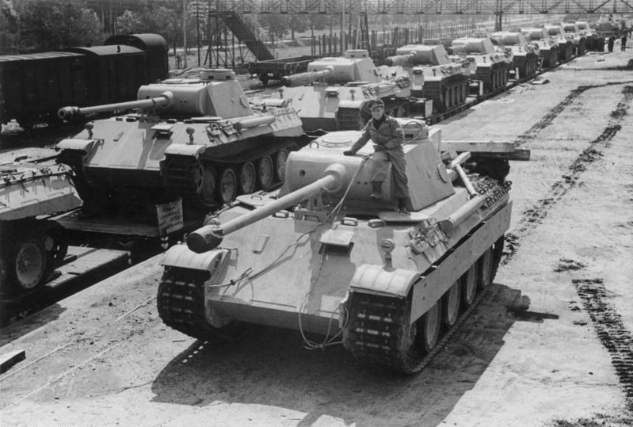

| Spesifikasi | Detail |
|---|---|
| Dimensi (Panjang dengan meriam) | 8,66 m |
| Dimensi (Panjang Badan Tank) | 6,87 m |
| Dimensi (Lebar dengan Schürzen) | 3,42 m |
| Dimensi (Lebar tanpa Schürzen) | 3,27 m |
| Dimensi (Tinggi) | 2,99 m |
| Berat | Sekitar 44,8 ton |
| Awak | 5 orang |
| Lapisan Baja (Depan Badan) | 80 mm (efektif sekitar 139 mm) |
| Lapisan Baja (Sisi Badan) | 40-50 mm |
| Lapisan Baja (Belakang Badan) | 40 mm |
| Lapisan Baja (Depan Kubah) | 100-110 mm |
| Persenjataan Utama | 1 x meriam tank 7,5 cm KwK 42 L/70 |
| Persenjataan Sekunder | 1 atau 2 x senapan mesin 7,92 mm MG 34 |
| Mesin | V12 Maybach HL230 P30 (kemudian) |
| Kecepatan Maksimum | 46-55 km/jam |
| Jarak Tempuh | 200-260 km (jalan), 100 km (medan berat) |
| Suspensi | Batang torsi ganda dengan roda jalan saling bertautan |
| Produksi | Sekitar 6.000 unit |